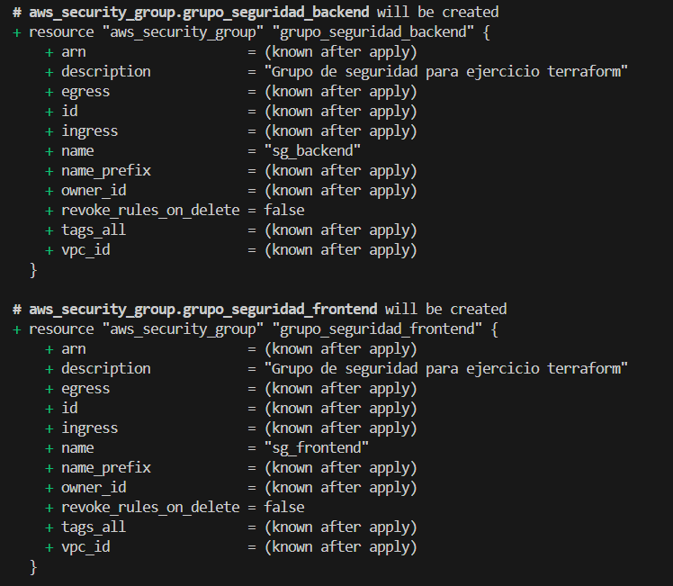

Práctica-4.5-Terraform#
Despliegue de infraestructuras usando el software terraform
Desarrollo de la actividad#
En la siguiente actividad vamos a usar el software terraform.
Terraform es una software de código abierto desarrollado por Hashicorp que se coloca como intermediario entre el servicio de cloud computing y el equipo desde donde se disparan las ordenes.
Este sistema se ha colocado como la principal herramienta para el IaaC (Infrastructure as a Code) y los profesionales del despliegue de infraestrutura por su versatilidad a la hora de crear códigos para despliegues de máquinas, y además por su facil unión con otras herramientas como Ansible o boto3 en python.
El depliegue#
Para la actividad primero vamos a conocer como funciona terraform, primero debemos crear los archivos variables.tf, main.tf y output.tf (ya que siempre es buena praxis diferenciar los documentos, ya que cuanta menos superficie de ataque mejor), estos archivos sigue el formato json, de diccionario clave = valor.
main.tf
# Configuramos el proveedor de AWS
provider "aws" {
region = var.region
}
# Creamos los grupos de seguridad
resource "aws_security_group" "grupo_seguridad_lb" {
name = var.sg_name_loadbalancer
description = var.sg_description
}
resource "aws_security_group" "grupo_seguridad_nfs" {
name = var.sg_name_nfs
description = var.sg_description
}
resource "aws_security_group" "grupo_seguridad_frontend" {
name = var.sg_name_frontend
description = var.sg_description
}
resource "aws_security_group" "grupo_seguridad_backend" {
name = var.sg_name_backend
description = var.sg_description
}
# Creamos las reglas de entrada del grupo de seguridad
resource "aws_security_group_rule" "ingress_load_balancer" {
security_group_id = aws_security_group.grupo_seguridad_lb.id
type = "ingress"
count = length(var.allowed_ingress_ports_loadbalancer)
from_port = var.allowed_ingress_ports_loadbalancer[count.index]
to_port = var.allowed_ingress_ports_loadbalancer[count.index]
protocol = "tcp"
cidr_blocks = ["0.0.0.0/0"]
}
resource "aws_security_group_rule" "ingress_nfs" {
security_group_id = aws_security_group.grupo_seguridad_nfs.id
type = "ingress"
count = length(var.allowed_ingress_ports_nfs)
from_port = var.allowed_ingress_ports_nfs[count.index]
to_port = var.allowed_ingress_ports_nfs[count.index]
protocol = "tcp"
cidr_blocks = ["0.0.0.0/0"]
}
resource "aws_security_group_rule" "ingress_frontend" {
security_group_id = aws_security_group.grupo_seguridad_frontend.id
type = "ingress"
count = length(var.allowed_ingress_ports_frontend)
from_port = var.allowed_ingress_ports_frontend[count.index]
to_port = var.allowed_ingress_ports_frontend[count.index]
protocol = "tcp"
cidr_blocks = ["0.0.0.0/0"]
}
resource "aws_security_group_rule" "ingress_backend" {
security_group_id = aws_security_group.grupo_seguridad_backend.id
type = "ingress"
count = length(var.allowed_ingress_ports_backend)
from_port = var.allowed_ingress_ports_backend[count.index]
to_port = var.allowed_ingress_ports_backend[count.index]
protocol = "tcp"
cidr_blocks = ["0.0.0.0/0"]
}
# Creamos las reglas de salida del grupo de seguridad
# Para ello usamos un bucle for_each para recorrer los grupos de seguridad
resource "aws_security_group_rule" "egress_all" {
for_each = {
lb = aws_security_group.grupo_seguridad_lb.id,
nfs = aws_security_group.grupo_seguridad_nfs.id,
frontend = aws_security_group.grupo_seguridad_frontend.id,
backend = aws_security_group.grupo_seguridad_backend.id
}
security_group_id = each.value
type = "egress"
from_port = 0
to_port = 0
protocol = "-1"
cidr_blocks = ["0.0.0.0/0"]
}
# Creamos las instancias EC2
resource "aws_instance" "instancia_loadbalancer" {
ami = var.ami_id
instance_type = var.instance_type
key_name = var.key_name
security_groups = [aws_security_group.grupo_seguridad_lb.name]
tags = {
Name = var.instance_name_loadbalancer
}
}
resource "aws_instance" "instancia_nfs" {
ami = var.ami_id
instance_type = var.instance_type
key_name = var.key_name
security_groups = [aws_security_group.grupo_seguridad_nfs.name]
tags = {
Name = var.instance_name_nfs
}
}
resource "aws_instance" "instancia_frontend" {
ami = var.ami_id
instance_type = var.instance_type
key_name = var.key_name
security_groups = [aws_security_group.grupo_seguridad_frontend.name]
tags = {
Name = var.instance_name_frontend
}
}
resource "aws_instance" "instancia_frontend2" {
ami = var.ami_id
instance_type = var.instance_type
key_name = var.key_name
security_groups = [aws_security_group.grupo_seguridad_frontend.name]
tags = {
Name = var.instance_name_frontend2
}
}
resource "aws_instance" "instancia_backend" {
ami = var.ami_id
instance_type = var.instance_type
key_name = var.key_name
security_groups = [aws_security_group.grupo_seguridad_backend.name]
tags = {
Name = var.instance_name_backend
}
}
# Creamos una IP elástica y la asociamos a la instancia
resource "aws_eip" "ip_elastica" {
instance = aws_instance.instancia_loadbalancer.id
}
variables.tf
variable "region" {
description = "Región de AWS donde se creará la instancia"
type = string
default = "us-east-1"
}
variable "allowed_ingress_ports_loadbalancer" {
description = "Puertos de entrada del grupo de seguridad loadbalancer"
type = list(number)
default = [22, 80, 443]
}
variable "allowed_ingress_ports_nfs" {
description = "Puertos de entrada del grupo de seguridad nfs"
type = list(number)
default = [22, 2049]
}
variable "allowed_ingress_ports_backend" {
description = "Puertos de entrada del grupo de seguridad backend"
type = list(number)
default = [22, 3306]
}
variable "allowed_ingress_ports_frontend" {
description = "Puertos de entrada del grupo de seguridad frontend"
type = list(number)
default = [22, 2049, 443, 80]
}
variable "sg_name_loadbalancer" {
description = "Nombre del grupo de seguridad"
type = string
default = "sg_loadbalancer"
}
variable "sg_name_nfs" {
description = "Nombre del grupo de seguridad"
type = string
default = "sg_nfs"
}
variable "sg_name_frontend" {
description = "Nombre del grupo de seguridad"
type = string
default = "sg_frontend"
}
variable "sg_name_backend" {
description = "Nombre del grupo de seguridad"
type = string
default = "sg_backend"
}
variable "sg_description" {
description = "Descripción del grupo de seguridad"
type = string
default = "Grupo de seguridad para ejercicio terraform"
}
variable "ami_id" {
description = "Identificador de la AMI"
type = string
default = "ami-04b4f1a9cf54c11d0"
}
variable "instance_type" {
description = "Tipo de instancia"
type = string
default = "t2.micro"
}
variable "key_name" {
description = "Nombre de la clave pública"
type = string
default = "vockey"
}
variable "instance_name_backend" {
description = "Nombre de la instancia"
type = string
default = "instancia_backend"
}
variable "instance_name_frontend" {
description = "Nombre de la instancia"
type = string
default = "instancia_frontend"
}
variable "instance_name_frontend2" {
description = "Nombre de la instancia"
type = string
default = "instancia_frontend2"
}
variable "instance_name_loadbalancer" {
description = "Nombre de la instancia"
type = string
default = "instancia_loadbalancer"
}
variable "instance_name_nfs" {
description = "Nombre de la instancia"
type = string
default = "instancia_nfs"
}
output.tf
# Mostramos la IP pública de la instancia
output "elastic_ip" {
value = aws_eip.ip_elastica.public_ip
}
output "public_ip_nfs" {
value = aws_instance.instancia_nfs.public_ip
}
output "public_ip_frontend" {
value = aws_instance.instancia_frontend.public_ip
}
output "public_ip_frontend2" {
value = aws_instance.instancia_frontend2.public_ip
}
Una vez tenemos los documentos, debemos conocer la secuencia de comandos:
- terraform init: inicia el entorno de trabajo para terraform.
-
terraform fmt: formatea el documento main para que cumpla la forma correcta.
-
terraform plan: da una vista previa de los comandos y las actuaciones que se van a ejecutar.

- terraform apply: ejecuta las órdenes del main.tf.

Como vemos nos pide una confirmación, para evitarla podemos poner la opción -auto-approve

Además como podemos comprobar, la salida que nos muestra es las diferentes variables que programamos en output.tf
Comprobaciones#
Si vamos a nuestro laboratorio de AWS veremos las instancias, la ip elástica y los grupos de seguridad, creados y asignados.